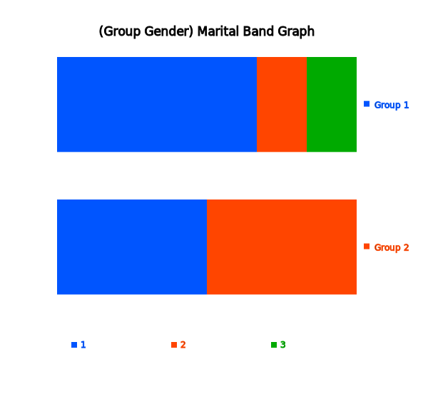

This section describes how to visualize the raw data in the case of qualitative data without groups and with groups.
Chapter 2. Visualization of Qualitative Data
2.3 Visualization of Raw Data
[presentation] [video]
Section 2.2 describes how to visualize the summary data of a categorical variable. This section describes how to visualize qualitative data in the form of raw data. In general, the raw data are processed by counting the number of data in each category of a categorical variable using a statistical package and the resulted summary data are visualized as in Section 2.2. 『eStat』 system enables this kind of work easily.
2.3.1 Raw Data of Categorical Variable
Example 2.3.1
(Survey on Gender – Raw Data)
There are 10 students in a class and gender (male or female) data are collected as follows. This kind of data are called as raw data.
male, female, male, female, male, male, male, female, male, female
In order to use a statistical package, the raw data are usually arranged as a column as in Table 2.3.1 with numeric coding (1: male, 2: female). Coding is not compulsory depending on packages, but 『eStat』 system allows the raw data of both with coding and without coding (character data).
Table 2.3.1 Gender Survey (1:Male, 2:Female)
| Gender |
|---|
| 1 |
| 2 |
| 1 |
| 2 |
| 1 |
| 1 |
| 1 |
| 2 |
| 1 |
| 2 |
Data of Table 2.3.1 are saved at the following address in 『eStat』 system.
[Ex] ⇨ eBook ⇨ EX020301_Raw_Gender.csv
Use 『eStat』 to draw a bar graph, a pie chart, and a band graph to find out characteristics of the raw data.
Answer
Enter the gender data of Table 2.3.1 on the sheet of 『eStat』 system or load the file from [Ex] ⇨ eBook ⇨ EX020301_Raw_Gender.csv.
If you enter the data, give a variable name 'Gender' using [Edit Var] button as shown in <Figure 2.3.1> and provide value labels to values 1 and 2 (1 for Male and 2 for Female). If the data are edited using the value labels, it must be saved with JSON format file (click on the JSON Save icon) to ensure that the edited information is not lost. If you want to load a file in JSON format to 『eStat』 system, you must also use the JSON Open icon.
|
<Figure 2.3.1> Value label using [Edit Var]
|
Click on the variable name 'Gender' to draw a vertical bar graph as shown in <Figure 2.3.2>. A bar graph was drawn after counting frequencies of each gender category, i.e. six males and four females. A basic function of statistical packages such as 『eStat』 is to examine a frequency distribution of the raw data and draw a graph using this frequency distribution.
The vertical bar graph
 such as <Figure 2.3.2> is frequently used. If there are a large number of categories,
a horizontal bar graph
such as <Figure 2.3.2> is frequently used. If there are a large number of categories,
a horizontal bar graph
 as in <Figure 2.3.3> can also be used (click on the horizontal bar graph icon in 『eStat』 ).
as in <Figure 2.3.3> can also be used (click on the horizontal bar graph icon in 『eStat』 ).

<Figure 2.3.2> Vertical bar graph of gender
<Figure 2.3.3> Horizontal bar graph of gender
Click on the pie chart icon
 in 『eStat』 to draw a pie chart (<Figure 2.3.4>)
and click on the band graph icon
in 『eStat』 to draw a pie chart (<Figure 2.3.4>)
and click on the band graph icon
 to draw a band graph (<Figure 2.3.5>). Click on the icon to draw a doughnut graph.
to draw a band graph (<Figure 2.3.5>). Click on the icon to draw a doughnut graph.

<Figure 2.3.4> Pie chart of gender

<Figure 2.3.5> Band graph of gender
|
Practice 2.3.1
(Preference of Mathematics)
In an elementary school, gender (1: male, 2: female) and math preference (1: good, 2: ordinary, 3: no) of students were surveyed and saved at the following location of 『eStat』 system.
[Ex] ⇨ eBook ⇨ PR020301_Raw_MathPreferenceByGender.csv.
Draw a bar graph, a pie chart, a band graph of the math preference. |
2.3.2 Raw Data of Categorical Variable with Group
Example 2.3.2
(Survey on Gender and Marital Status – Raw Data with Group)
In addition to the gender data of Example 2.3.1, marital status (1: Single 2: Married, 3: Other) was also surveyed as in Table 2.3.2. Compare characteristics of marital status by gender (male and female) using a bar graph, a pie chart, a band graph, and a line graph. Data are saved at the following location of 『eStat』.
[Ex] ⇨ eBook ⇨ EX020302_Raw_MaritalByGender.csv
Table 2.3.2 Survey of gender and Marital status
| Gender (1:Male, 2:Female) |
Marital Status (1:Single, 2:Married, 3:Other) |
|---|---|
| 1 | 1 |
| 2 | 2 |
| 1 | 1 |
| 2 | 1 |
| 1 | 2 |
| 1 | 1 |
| 1 | 1 |
| 2 | 2 |
| 1 | 3 |
| 2 | 1 |
Answer
|
Enter the gender and marital status data of Table 2.3.2 on the sheet of 『eStat』 system. Use [Edit Var] button to enter a variable name as 'Gender' and its value labels as 'Male' for value 1 and 'Female' for value 2. Similarly, enter a variable name as ‘Marital’ and its value labels as ‘Single’ for 1, ‘Married’ for 2 and ‘Other’ for 3.
The data edited for their variable names and value labels must be saved in JSON format file (click on the JSON Save icon ) to ensure that the information is not lost. When recalling again, you must also click on the JSON Open icon . |
If you click on the ‘marital’ and ‘gender’ variable names sequentially, a separated vertical bar graph of marital status by gender is drawn as in <Figure 2.3.6>.

<Figure 2.3.6> Vertical bar graph of marital status by gender
This separated bar graph by gender can be modified in a different form using the icons below the main icons
which are a vertical stacked
 (<Figure 2.3.7>), a ratio (<Figure 2.3.8>),
(<Figure 2.3.7>), a ratio (<Figure 2.3.8>),
 a side-by-side (<Figure 2.3.9>)
a side-by-side (<Figure 2.3.9>)
 ,
a bi-lateral (Figure 2.3.10)
,
a bi-lateral (Figure 2.3.10)
 and a horizontal separated
and a horizontal separated
 (<Figure 2.3.11>), a stacked
(<Figure 2.3.11>), a stacked
 (<Figure 2.3.12>), a ratio
(<Figure 2.3.12>), a ratio
 (<Figure 2.3.13>), a side-by-side
(<Figure 2.3.14>), a bi-lateral
(<Figure 2.3.13>), a side-by-side
(<Figure 2.3.14>), a bi-lateral
 (<Figure 2.3.15>).
(<Figure 2.3.15>).
<Figure 2.3.7> Vertical stacked bar graph of marital status by gender
<Figure 2.3.8> Vertical proportional bar graph of marital status by gender

<Figure 2.3.9> Vertical side by side bar graph of marital status by gender

<Figure 2.3.10> Vertical bi-lateral bar graph of marital status by gender

<Figure 2.3.11> Horizontal bar graph of marital status by gender

<Figure 2.3.12> Horizontal stacked bar graph of marital status by gender
<Figure 2.3.13> Horizontal proportional bar graph of marital status by gender

<Figure 2.3.14> Horizontal side by side bar graph of marital status by gender

<Figure 2.3.15> Horizontal bi-lateral bar graph of marital status by gender
Click on the pie chart
 and band graph icons
and band graph icons
 and in 『eStat』 to draw a pie chart as in <Figure 2.3.16> and a band graph as in <Figure 2.3.17>. It is easy to observe which categories in each group account for a large percentage of the total data.
and in 『eStat』 to draw a pie chart as in <Figure 2.3.16> and a band graph as in <Figure 2.3.17>. It is easy to observe which categories in each group account for a large percentage of the total data.

<Figure 2.3.16> Pie chart of marital status by gender

<Figure 2.3.17> Band graph of marital status by gender
|
Practice 2.3.2 (Preference of Mathematics by Gender) n an elementary school, gender (1: male, 2: female) and math preference (1: good, 2: ordinary, 3: no) of students were surveyed and saved at the following location of 『eStat』 system.
[Ex] ⇨ eBook ⇨ PR020302_Raw_MathPreferenceByGender.csv.
Draw a bar graph, a pie chart and a band graph of the math preference by gender. |